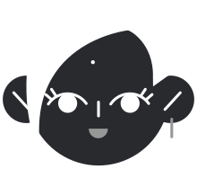
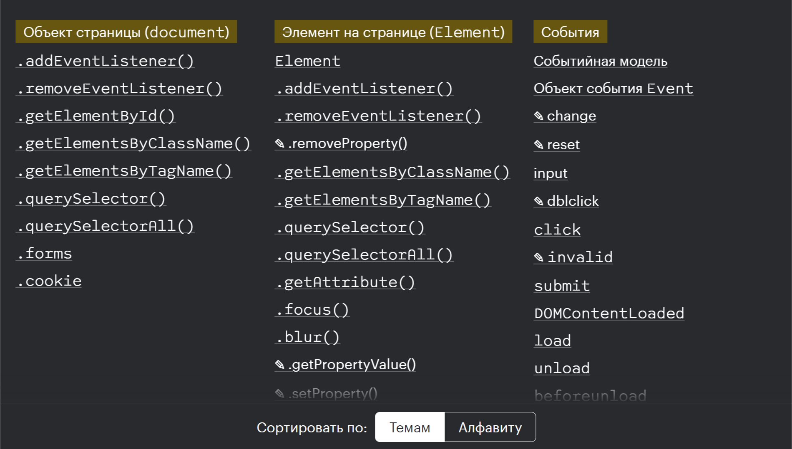

Doka is a user-friendly documentation resource for developers, written in clear and plain Russian language. It was created by the tech community to help one another ü´Ç
The Short History
The original idea originated at Practicum in 2019, but it's an open source project
The official launch was on 12th October 2021
Some Facts
As of now, there are 414 contributors in total
Doka reached one million unique views in September 2023
The mascot of Doka is the dog Doka Dog. In the early stages, it was –∞ raccoon dog ü¶ùüê∂

Svetlana Korobtseva, Product Designer and connoisseur of beautyIgor Korovchenko, DevOps Engineer, 'Master of keys'Anastasia Shaposhnikova, Communication and Development ManagerEgor Levchenko, Community Ambassador
Technologies and Sections
HTML
CSS
JavaScript
Accessibility
Web platform
Recipes (not cooking, ha-ha)
SVG (to be launched later in 2024) üöß

Why MDN Is Not Enough
Not all articles are translated into Russian language, and unfortunately, this is true for other languages as well
Sometimes, it's just a copy and paste from an official documentation without further or clear explanation
In many articles, there are no code demos
Contributing is not so easy
There can never be too many documentations and handbooks about web technologies ü§ì
Why Become a Contributor
You help other developers and the entire community ü•∞
You learn a lot and revisit a technical documentation ü§ì
Two of our team members/contributors have moved to London, so‚Ķ üòé
It's simply fun ü§™
What You Can Do
Write large articles or small texts, which we call 'doka'
Create and improve code demos
Enhance the quality of existing articles and dokas
Fix bugs and develop new features for the platform
Help to review others' pull requests
Doka's Anatomy
Two main GitHub repositories: platform and content ü´Ä
The content repository contains articles, while the platform repository hosts the website itself.
Our platform runs on 11ty. We use Nunjucks, CSS, and JavaScript for development
Other repositories include search for the website's search API, and api for the backend
We have a big backlog in our platform üåå
And a content backlog is huge. I mean it!
How To Start
Find Your Favourite Issue: Choose an issue from the project's issue tracker that interests you the most
Fork the Repository with Content: Create a personal copy of the repository
Write Your First Material: After forking the repository, you can start writing or editing content
Create a Pull Request: Once your material is ready, you submit a pull request. Editors will help you to improve your article